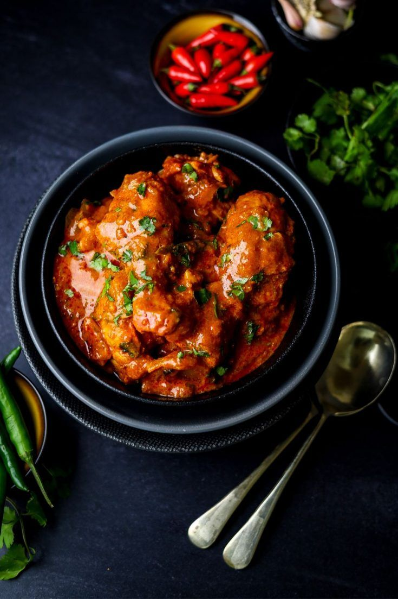

Butter Chicken

Description
When it comes to protein, chicken is most enjoyed by many. But what if we made this chicken extraordinary by flavouring it with classic cream sauce? Butter chicken is what it's called. Let's dive into the recipe, now!
The Basic Recipe
Below is an authentic recipe for a simple but rich and creamy butter chicken
Ingredients for the Chicken:
- 500g of chicken breasts or thighs
- Half (1/2) a teaspoon of salt
- One (1) teaspoon of ginger paste
- One (1) teaspoon of garlic paste
- One (1) teaspoon of chilli powder (any amount is fine, depending on your taste)
- One (1) teaspoon of tumeric
- One (1) teaspoon of garam masala
- Half (1/2) a cup of plain yoghurt
Ingredients for the Butter sauce:
- Two (2) tablespoons of butter
- One (1) tablespoon of oil
- One (1) tablespoon of salt
- One (1) tablespoon of sugar
- One (1) teaspoon of ginger paste
- One (1) teaspoon of garlic paste
- One (1) medium finely-chopped onion (any amount is fine, depending on your taste)
- One (1) teaspoon of chilli powder
- One (1) teaspoon of garam masala
- One (1) teaspoon of paprika
- One (1) cup of blended tomatoes
- Half (1/2) a cup of heavy cream
- One (1) teaspoon of paprika
Steps
- Mix the chicken with the ginger & garlic paste, tumeric, chilli powder, garam masala and yoghurt. Let it sit for about 30 mins to marinate the chicken
- Fry in a pan with little oil until cooked OR bake at 180 degree Celcius for 15 mins (either one is fine). Set aside
- Heat butter & oil in a pot. Add the chopped onion and cook until soft. Add ginger& garlic paste and cook for 1 minute
- Add chilli powder, paprika, garam masala and stir for 30 seconds. Pour in the blended tomatoes and let it simmer for 10 mins until it's thick and darker
- Add sugar and salt and stir in the cream
- Add more salt, pepper or extra flavourings if needed. Serve!